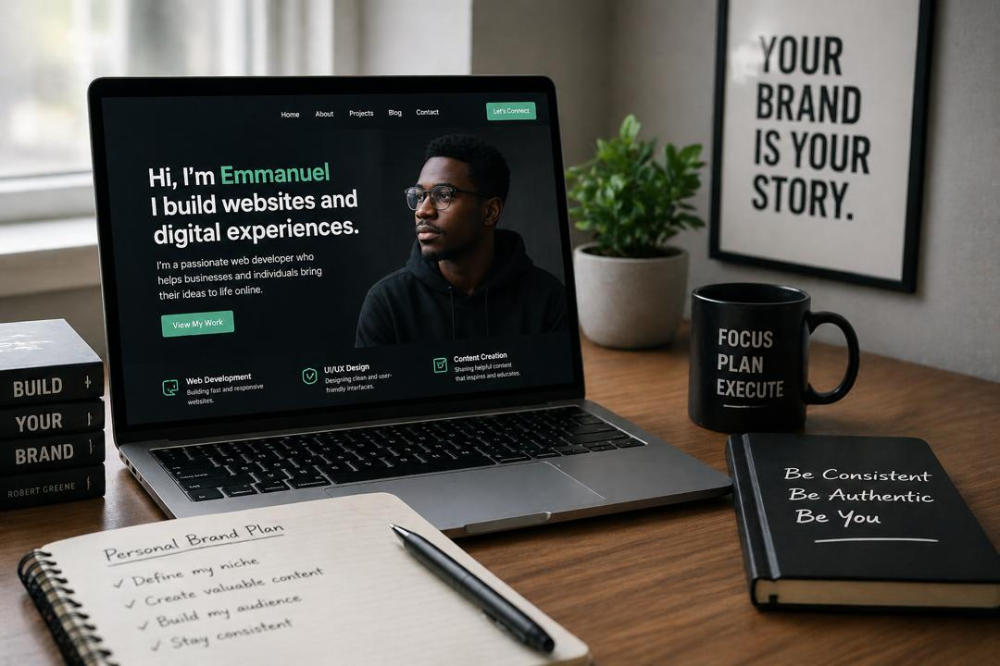

BUSINESS
Building a Personal Brand Online
May 18, 2024 • 4 min read

Building a personal brand online is about showing people who you are, what you do, and the value you can offer. Whether you're a developer, designer, freelancer, or entrepreneur, your online presence becomes your digital identity. A strong personal brand is built through consistency—sharing your work, posting valuable content, and creating a clear message that helps people understand your skills and expertise
In today’s digital world, platforms like [LinkedIn] [Instagram], and personal portfolio websites can help you reach a wider audience and build trust over time. By staying authentic, improving your craft, and regularly sharing your journey, you can turn your personal brand into opportunities such as clients, collaborations, and career growth.